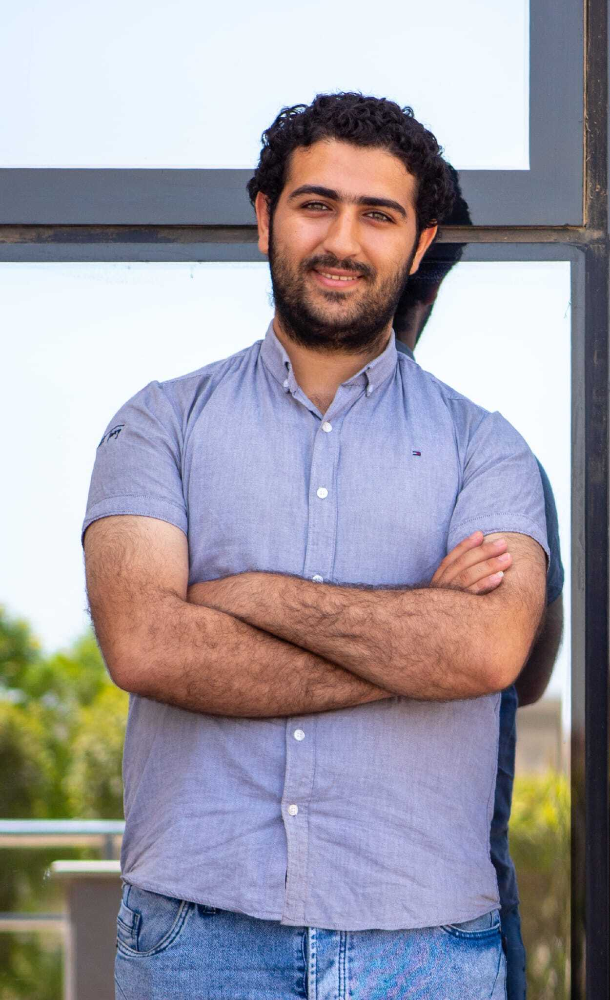
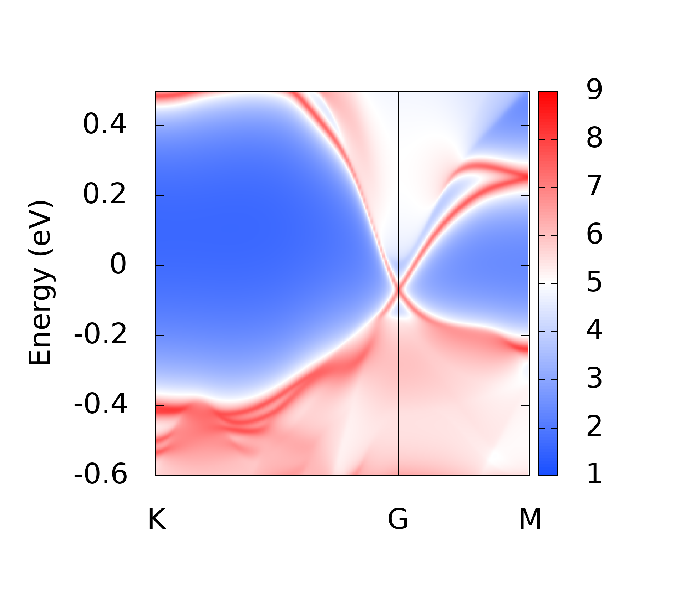

Topological properties of Bi2Se3
First-principles and Wannier-based study of a topological-insulator system. The project focuses on electronic bands, spin-orbit coupling, Wannier functions, and topological features of the material.

University of Bologna
I am interested in topological materials, electronic-structure theory, density-functional theory, Quantum Information and Computation.
My work combines theoretical condensed matter physics with computational simulation, data analysis, and reproducible Linux/HPC workflows.
Topological insulators, spin-orbit coupling, electronic bands, and topological invariants.
Density-functional theory, VASP, Quantum ESPRESSO, Wannier90, band structures, and tight-binding models.
Adsorption phenomena, surface chemistry, molecular dynamics, and materials characterisation.
Python, C/C++, LaTeX, data visualisation, Linux, SLURM, and high-performance computing workflows.

First-principles and Wannier-based study of a topological-insulator system. The project focuses on electronic bands, spin-orbit coupling, Wannier functions, and topological features of the material.

Density-functional-theory calculations on adsorption phenomena at the surface, with emphasis on surface structure, electronic properties, and chemical interactions.
Alma Mater Studiorum – University of Bologna.
Professional Master in Computer Science (Quantum Computing), Alexandria University.
Teaching support, problem-solving sessions, and laboratory work at UST-ZC and MUST.
Third-place winner for developing a quantum-machine-learning classification model with Qiskit Machine Learning.
I welcome research discussions, collaboration opportunities, and professional inquiries.